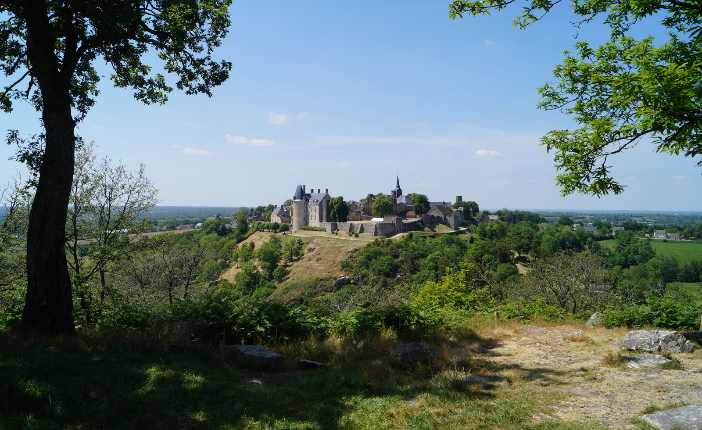
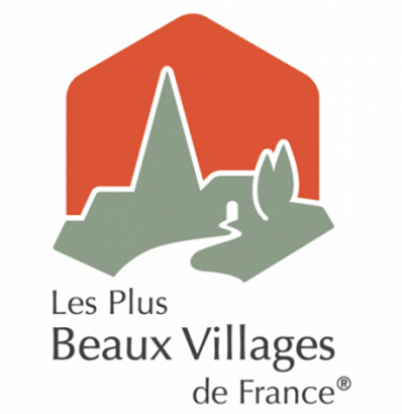
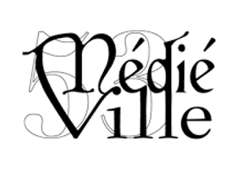

Boucle bucolique le long de l’Erve, 100 D+, parfaite pour découvrir l’esprit de l’épreuve.
Samedi 23 mai 2026
Les Trails des Conquérants
Une journée sportive, festive et solidaire dans la cité médiévale de Sainte-Suzanne, entre remparts, rivière, forêt et chemins qui piquent juste ce qu’il faut.
6
courses adultes
2
courses juniors
1€
reversé par inscription
23
mai 2026
Run en fête
Sport. Nature. Culture.
Sainte-Suzanne réunit tout ce qui fait une belle journée de trail : le relief, les ruelles, la vallée de l’Erve, les points de vue et l’ambiance d’un village classé parmi les Plus Beaux Villages de France.
Au programme : des formats courts, des boucles horaires, des distances longues, des courses juniors, de la musique, un repas, un concert et des bénévoles prêts à accueillir les coureurs comme les accompagnants.

Les formats
À chacun son terrain
Des boucles à courir en solo ou en relais, des distances classiques en trail, et deux parcours juniors gratuits dans la cité.
Un parcours plus cassant, 220 D+, pensé pour celles et ceux qui aiment le vrai trail.
Forêt, rivière, cité médiévale et 500 D+ pour repartir avec un souvenir bien accroché.
Deux boucles du 21 km, 1 000 D+, pour vivre la version longue des Conquérants.
Une journée complète
Courir, rester, partager
La course n’est qu’une partie du rendez-vous : ravitos généreux, animations gratuites, biatrail, atelier nature, repas et DJ jusqu’à minuit.
Côté sport
Un ravitaillement principal copieux, deux ravitaillements secondaires et des formats adaptés aux solos, relais et jeunes coureurs.
Côté fête
Animation musicale toute la journée, biatrail gratuit avec Biathlon Concept, repas du soir et concert pour prolonger l’effort.
Côté solidaire
1€ par inscription reversé à Ruban Bleu, association engagée pour rendre visible la sclérose en plaques.
Quelques partenaires
Ils rendent ça possible
Collectivités, commerces, associations et entreprises locales accompagnent l’événement et les bénévoles.

Plus Beaux Villages
Le cadre patrimonial qui donne à la course son décor unique.
Biathlon Concept
L’animation bia-trail gratuite, ouverte sur place pendant la journée.

Médiéville 53
L’association organisatrice qui porte la manifestation.
Prêt à prendre le départ ?
Les inscriptions se font via Strayde. Pour les questions pratiques, Jérémie Maslowski et l’équipe des 6H restent joignables directement.